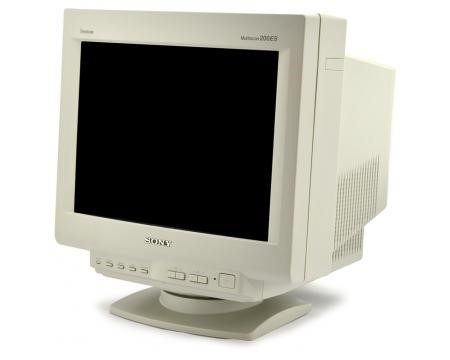

Postoje različiti načini za prikaz slike na monitoru, jedan od njih je pomoću katodnih cijevi. Monitor s katodnom cijevi (engl. CRT monitor, cathode ray tube monitor) je jedna od prvih vrsta monitora. Katodna cijev (engl. Cathode Ray Tube ili CRT) je elektronska cijev u kojoj se elektroni, izbačeni iz užarene katode, zbog visokog napona između katode i anode ubrzavaju prema anodi u obliku snopa. Taj se snop usmjerava na fluorescentni zaslon, na kojem stvara svjetleću točku. Sustav za usmjeravanje (kondenzatorska polja dvaju parova pločica ili magnetska polja dvaju parova električnih zavojnica) otklanja elektronski snop u dva međusobno okomita smjera, oba okomita na smjer snopa. Položaj i gibanje točke na zaslonu ovisi o naponima između pločica, tj. o strujama u zavojnicama. Katodna cijev osnova je osciloskopa, uređaja za vizualizaciju i analizu električnog signala. Prvi je takvu cijev i uređaj konstruirao Karl Ferdinand Braun 1897.
